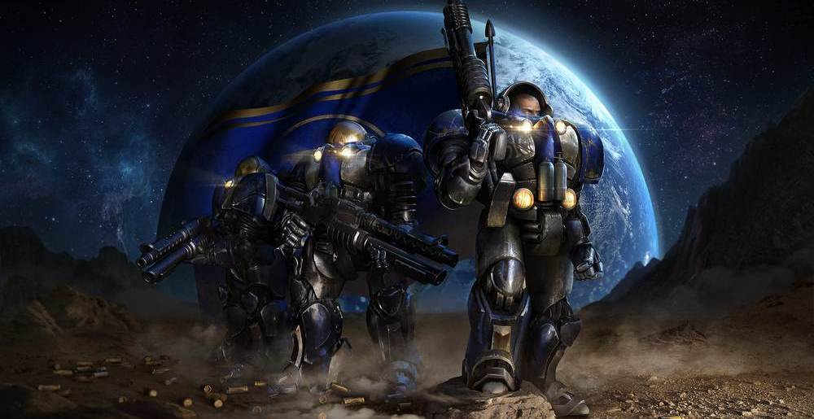

PlayBoy
PlayBoyИгра
StarCraft — серия стратегий в реальном времени, разрабатываемая компанией Blizzard Entertainment.® Она схожа с предыдущим хитом Blizzard — Warcraft, но действие игры происходит на космических просторах в фантастическом сеттинге. Первая часть игры была выпущена в 1998 году и была очень успешна. К 2004 году было продано 9.5 миллионов копий игры (4.5 миллиона из них - в Южной Корее), что делает её одной из самых продаваемых игр в истории. StarCraft стала эталоном среди RTS за свою глубину, разнообразие и баланс между расами.
Расы
Основная история повествует о войне трёх галактических рас:терранов - потомки преступников с Земли, заброшенных далеко в космосе; зергов - отвратительных насекомоподобных существ c коллективным разумом; протоссов - раса религиозных воинов.
Терраны
Терраны — разумная раса из вымышленной вселенной StarCraft, на которой основана одноимённая серия компьютерных игр компании Blizzard. Согласно предыстории игры StarCraft, терраны внешне идентичны нынешним землянам, от которых происходят, однако некоторые из них обладают пси-способностями. Во время событий игр серии терраны оказываются в центре войны между протоссами и зергами и пытаются выжить, в то же время переживая также гражданские войны.
Зерги
Зерги — инопланетная раса в игре StarCraft, одна из трёх доступных фракций в игре. Зерги представляют собой насекомых-мутантов. Зерги являются полной противоположностью и главными противниками протоссов.
Протоссы
Протоссы — раса из вымышленной вселенной StarCraft, высокоразвитая технически и обладающая ярко выраженными пси-способностями. Протоссы являются полной противоположностью и главными противниками зергов.
Вооружение
| Раса и терраны | Вооружение |
|---|---|
| Пушки, танки, бластеры | |
| Зерги | Клыки, когти, органическое оружие |
| Протоссы | Бластеры, енергоклинки, протонное вооружение |
Терраны
- Танки-трансформеры (увеличивают дальность огня в осадном положении)
- Крейсеры-молоты (ведут огонь оружием "Ямато")
Зерги
- Могут зарываться и наносить урон из под земли
- Могут заражать врага паразитами (слежка за вражескими юнитами)
Протоссы
- Вызывают здания из порталов (не нужно строить)
- Авианосцы протоссов - анигиляция всему живому